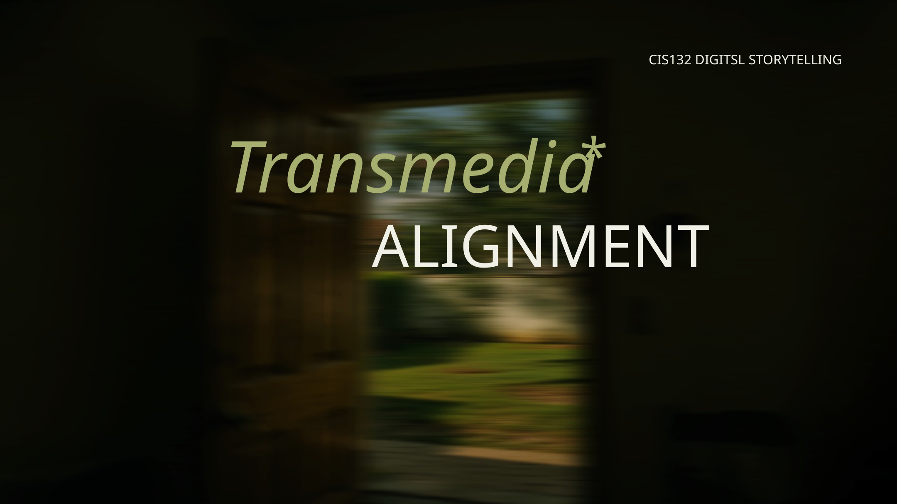
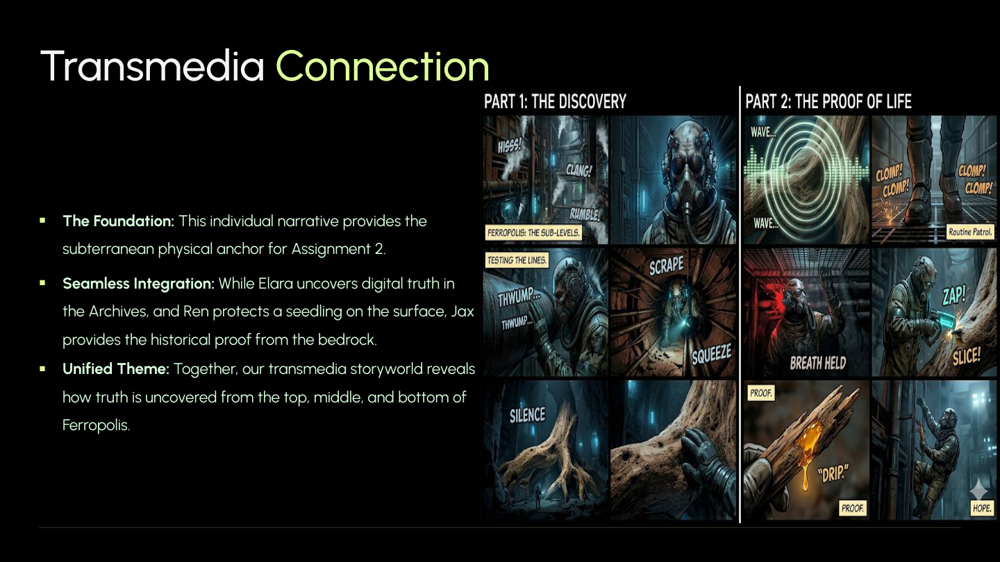

FERROPOLIS
A propaganda-heavy dystopian metropolis bound by the doctrine “Metal is eternal; Flesh is fleeting.” This page merges The Digital Seed and The Echoes of the Foundation into one proper lore hub.
A city built on suppression, memory erasure and buried life.
Ferropolis works best as the signature universe of the site. The Archives are the cerebral cortex of the city: cold steel, humming processors and information control. The Deep Layers are noisy, grimy and physically oppressive. Beneath all of it lies the titan-tree foundation that proves the “eternal” metal city is actually feeding on the old world.

ELARA // THE DIGITAL SEED
Elara’s branch gives the city its informational and psychological awakening.
Elara works inside the Iron Guard Archives, identifying and erasing fragments of history deemed illegal by the ruling system.
During a routine deep-scrub, she encounters organic code, impossible green radiance, trees and birds—proof that Earth was once beautiful.
She can obey the doctrine and erase the file, or download the Digital Seed and preserve the last memory of nature.
At the central node she unleashes the image city-wide. The people finally see green, and the regime can no longer make them unsee it.

JAX // ECHOES OF THE FOUNDATION
Jax’s branch gives the same universe physical evidence from below the city.
Jax is completely blind and uses illegal modified audio implants to hear structural vibrations in the undercity.
Beneath the generator blocks he hears something dense and alive, then discovers the petrified root of an ancient titan-tree.
He risks his life to extract a splinter. Golden sap oozes out—undeniable proof that nature is still alive under Ferropolis.
The city is no eternal machine. It is a parasite built on the corpse of a geothermal life-source from the old world.

TRANSMEDIA STRUCTURE
This section turns the class-project connection into an actual website information architecture.
Top
Elara uncovers digital and historical truth from the Archives. This is the ideological crack in the regime.
Middle
The city population becomes the pressure chamber where forbidden truth spreads and public awakening begins.
Bottom
Jax uncovers physical truth from the bedrock, proving the regime’s worldview is materially false, not just morally false.
FERROPOLIS MEDIA
Use these as immediate in-site visuals while keeping the dark, high-contrast Hypergryph feel.



